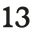
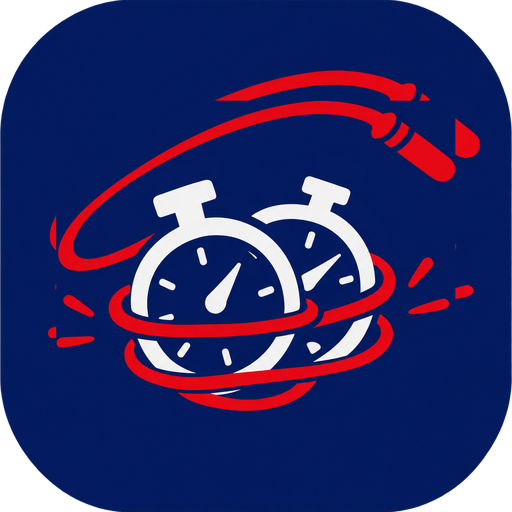

01 Co dělám
Dělám weby a appky lidem a firmám, co mají co nabídnout, ale nemají rozpočet na digitální cirkus.
Nejvíc mě baví stavět věci, co ušetří práci: web, co se sám stará o SEO a viditelnost, appku na proces, který dneska někdo dělá ručně v tabulce, nebo automatizaci, co odbourá otravnou opakující se činnost.
Často se ukáže, že řešení je jiné, než co si klient původně představoval. Někdy stačí web, jindy appka na míru, jindy jen jinak poskládaný proces.
Napiš, co tě trápí — probereme to a přijdeme na to, co dává smysl. Konkrétně umím: weby a landing pages, appky a automatizace na míru, SEO a viditelnost i pro AI vyhledávače.
02 Ukázky práce
Weby

13 řemesel Ondřej si uměl udělat web sám, přes Squarespace. Stálo ho to spoustu času, peněz a kompromisů. Převedla jsem jeho práci do kódu, za který nemusí každý měsíc platit a navrch se postarala o správnou viditelnost. vanilla HTML/CSS/JSvlastní SSG v Node.jsStripe Payment Links trinactremesel.cz ↗ Ondřej Pelikán Portfolio umělce — fotografie, objekty, poezie, zvuk a performance. vanilla HTML/CSS/JSvlastní SSG v Node.jsachromatická paleta ondrapelikan.cz ↗Appky
Miluješ Google Tabulky? To každý. Ale mít vlastní appku, která vypadá a funguje přesně podle tebe, je ještě lepší.

Time Tamer Osobní appka na počítání odpracovaných hodin. Funguje na počítači i na telefonu souběžně, exportuje výkaz práce pro klienta, stíhá všechny moje chaotické potřeby. Cloudflare WorkersD1Hono03 Ozvi se
Můžeme spolu vymyslet automatizaci na to, co tě pálí nejvíc nebo připravit webovou prezentaci. Možná půjde o něco úplně nového, určitě to ale rozlousknem.